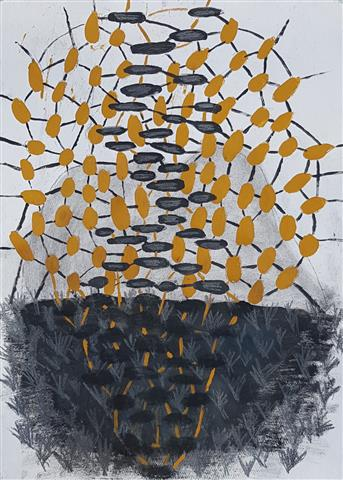

Neue Gedichte, mit grafischen Arbeiten von Beate Debus. Dr. Ziethen Verlag Oschersleben 2022.
ÜBER DEINE FLUREN
Über deine Fluren
Zieht der Herbst.
Keine Fragen mehr,
Ob dieser Sommer
Gut war.
Die Felder geben
Was sie haben.
Der Himmel
Nimmt sich seinen Teil.
So geht das hier
Seit jeher.
Ich sehe zu
Und bin dabei.

Foto von der Premierenlesung
IN SUHL
Diese Stadt,
Ich weiß nicht mehr,
Wie ich ohne sie wäre.
Morgens die Straßen
Noch halb im Schlaf.
Mittags der Lärm
Der mich kennt.
Abends die Berge
Dunkel dahinter.
Und ich
Schon wieder zuhause.